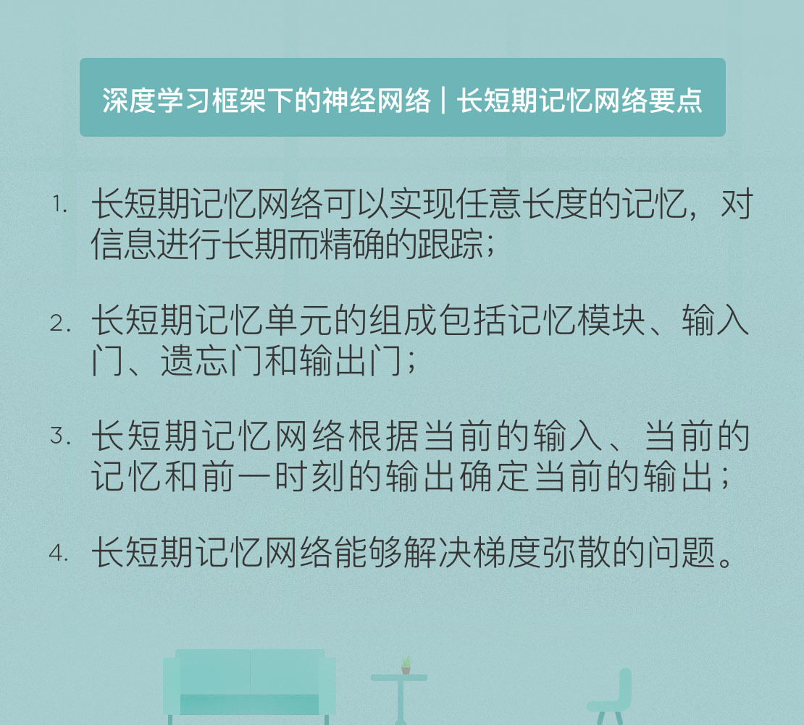

- 00 开篇词 人工智能：新时代的必修课.md.html
- 01 数学基础 九层之台，起于累土：线性代数.md.html
- 02 数学基础 月有阴晴圆缺，此事古难全：概率论.md.html
- 03 数学基础 窥一斑而知全豹：数理统计.md.html
- 04 数学基础 不畏浮云遮望眼：最优化方法.md.html
- 05 数学基础 万物皆数，信息亦然：信息论.md.html
- 06 数学基础 明日黄花迹难寻：形式逻辑.md.html
- 07 机器学习 数山有路，学海无涯：机器学习概论.md.html
- 08 机器学习 简约而不简单：线性回归.md.html
- 09 机器学习 大道至简：朴素贝叶斯方法.md.html
- 10 机器学习 衍化至繁：逻辑回归.md.html
- 11 机器学习 步步为营，有章可循：决策树.md.html
- 12 机器学习 穷则变，变则通：支持向量机.md.html
- 13 机器学习 三个臭皮匠，赛过诸葛亮：集成学习.md.html
- 14 机器学习 物以类聚，人以群分：聚类分析.md.html
- 15 机器学习 好钢用在刀刃上：降维学习.md.html
- 16 人工神经网络 道法自然，久藏玄冥：神经网络的生理学背景.md.html
- 17 人工神经网络 一个青年才俊的意外死亡：神经元与感知器.md.html
- 18 人工神经网络 左手信号，右手误差：多层感知器.md.html
- 19 人工神经网络 各人自扫门前雪：径向基函数神经网络.md.html
- 20 人工神经网络 看不见的手：自组织特征映射.md.html
- 21 人工神经网络 水无至清，人莫至察：模糊神经网络.md.html
- 22 深度学习 空山鸣响，静水流深：深度学习概述.md.html
- 23 深度学习 前方有路，未来可期：深度前馈网络.md.html
- 24 深度学习 小树不修不直溜：深度学习中的正则化.md.html
- 25 深度学习 玉不琢不成器：深度学习中的优化.md.html
- 26 深度学习 空竹里的秘密：自编码器.md.html
- 27 深度学习 困知勉行者勇：深度强化学习.md.html
- 28 深度学习框架下的神经网络 枯木逢春：深度信念网络.md.html
- 29 深度学习框架下的神经网络 见微知著：卷积神经网络.md.html
- 30 深度学习框架下的神经网络 昨日重现：循环神经网络.md.html
- 31 深度学习框架下的神经网络 左右互搏：生成式对抗网络.md.html
- 32 深度学习框架下的神经网络 三重门：长短期记忆网络.md.html
- 33 深度学习之外的人工智能 一图胜千言：概率图模型.md.html
- 34 深度学习之外的人工智能 乌合之众的逆袭：集群智能.md.html
- 35 深度学习之外的人工智能 授人以鱼不如授人以渔：迁移学习.md.html
- 36 深度学习之外的人工智能 滴水藏海：知识图谱.md.html
- 37 应用场景 你是我的眼：计算机视觉.md.html
- 38 应用场景 嘿, Siri：语音处理.md.html
- 39 应用场景 心有灵犀一点通：对话系统.md.html
- 40 应用场景 数字巴别塔：机器翻译.md.html
- 一键到达 人工神经网络复习课.md.html
- 一键到达 应用场景复习课.md.html
- 一键到达 数学基础复习课.md.html
- 一键到达 机器学习复习课.md.html
- 一键到达 深度学习之外的人工智能复习课.md.html
- 一键到达 深度学习复习课.md.html
- 一键到达 深度学习框架下的神经网络复习课.md.html
- 推荐阅读 我与人工智能的故事.md.html
- 新书 《裂变：秒懂人工智能的基础课》.md.html
- 直播回顾 机器学习必备的数学基础.md.html
- 第2季回归 这次我们来聊聊机器学习.md.html
- 结课 溯洄从之，道阻且长.md.html
- 课外谈 “人工智能基础课”之二三闲话.md.html
- （课外辅导）人工神经网络 拓展阅读参考书.md.html
- （课外辅导）数学基础 拓展阅读参考书.md.html
- （课外辅导）机器学习 拓展阅读参考书.md.html
- （课外辅导）深度学习 拓展阅读参考书.md.html
- 捐赠
32 深度学习框架下的神经网络 三重门：长短期记忆网络
在之前的专栏中，我和你分享了循环神经网络的原理，而今天要介绍的长短期记忆网络就是一类特殊的循环神经网络。这个词的断句方式是“长-短期记忆网络”，表达的含义是一类可以持续很长时间的短期记忆模型。对时隙长度的不敏感性是这种模型的优势，因而它适用于序列中信息之间的时滞不确定的情况。
循环神经网络通过在时间上共享参数引入了记忆特性，从而将先前的信息应用在当前的任务上，可这种记忆通常只有有限的深度。有追剧经历的都会知道，国外的电视剧通常是每周更新一集，可即使经历了一周的空窗期，我们依然能将前一集的内容和新一集的情节无缝衔接起来。但循环神经网络的记忆就没有这么强的延续性，别说是一个星期的断片儿，插播一段五分钟广告就足以让它的记忆脱节，造成理解上的混乱。
真实世界中的信息不是静止的，而是不断经历着流转与跃变，如果神经网络不能保存长期记忆的话，它处理信息的能力就会大打折扣。长短期记忆网络（long short-term memory）的作用就是实现长期记忆，更准确地说，是实现任意长度的记忆。精巧的设计使记住长期的信息成为了长短期记忆网络的默认行为，而不是需要付出很大代价才能获得的能力。
从机制上讲，要实现长期记忆，神经网络既要学会记忆，也要学会遗忘。长期记忆的基础是足够的存储，但宝贵的存储不能被滥用，它不是收集桶，有用的没用的都一股脑儿往里面扔。长期记忆要求模型具备对信息价值的判断能力，结合自身的状态确定哪些信息应该保留，而哪些信息应该舍弃。比方说电视剧里的一段支线情节结束了，模型就应当重置相关的信息，只需保留对应的结果。同理，当收到新的输入信息时，模型也要判断这些信息是否有用，以及是否需要保存。
除了添加遗忘机制之外，长短期记忆单元还要能够将长期记忆聚焦成工作记忆，也就是哪一部分记忆需要立刻使用。有用的信息也不会每时每刻都有用，因而记忆单元并不会始终使用所有的长期记忆，而是根据当前的相关性做出取舍，这就类似于人类注意力的工作方式。遗忘和选择使长短期记忆网络能够对记忆做出更细粒度的处理，它不同于循环神经网络一视同仁的方式，因而可以实现对信息进行长期而精确的跟踪。
长短期记忆网络是由相应的基本单元构成的。长短期记忆的基本单元的作用在需要时取出并聚焦记忆，通常包括四个功能不同的隐藏层：记忆模块（memory cell）、输入门（input gate）、输出门（output gate）和遗忘门（forget gate），这比只有一个激活函数的一般循环神经网络要复杂得多。
记忆模块的作用时存储数值或是状态，存储的时限既可以是长期也可以是短期。另外的“三重门”则用于控制信息的有选择通过，三者都使用对数几率函数作为传递函数。
在这“三重门”中，输入门决定哪些新信息被存放在记忆模块中，遗忘门决定哪些信息被从记忆模块中丢弃，输出门则决定记忆模块中的哪些信息被用于计算整个长短期记忆单元的输出。值得一提的是，长短期记忆网络的最初版本只有输入门和输出门，遗忘门是作为一项改进添加的。
下面来看看长短期记忆单元的工作流程：根据遗忘机制，记忆模块要根据时刻\(t\)的输入来更新现有的记忆，这个过程首先由遗忘门来完成。如果网络处理的对象是这样一句话：“李雷XXX，韩梅梅XXX”，那么当“韩梅梅”出现时，遗忘门就能够察觉到主语的变化，从而降低“李雷”在记忆单元中的权重。在很多种语言中，主语性别的改变也意味着动词词形的变化。
当然，记忆单元的更新不一定意味着完全的替换，对新输入的部分信息和原始存储中的部分信息加以整合也是可以的。遗忘门的输入包括这个长短期记忆单元在时刻\(t - 1\)的输出\(y(t - 1)\)和时刻\(t\)的输入\(x(t)\)，两者的加权组合再送进对数几率函数计算输出，其表达式可以写成
\[ \\mathbf{f}(t) = \\sigma (\\mathbf{W}_f \\mathbf{x}(t) + \\mathbf{R}_f \\mathbf{y}(t - 1) + \\mathbf{b}_f) \]
其中\(\\sigma{\\cdot}\)表示对数几率函数。如果遗忘门的输出为0，意味着记忆单元的当前存储要被全部舍弃，输出为1则意味着全部保留。
在决定哪些来自输入的信息进入到记忆模块中时，就轮到输入门发挥作用了。遗忘门的作用是弃旧，输入门的作用则是图新，将新来的“韩梅梅”添加到记忆模块之中。输入门的工作机制与遗忘门类似，但是更加复杂，它首先用对数几率函数对即时输入和上一时刻的输出的组合进行过滤，过滤的作用一方面在于确定哪些信息被保留，另一方面则在于确定这些信息以何种比例被添加到记忆单元之中。将待保留的结果与权重系数相乘，就得到了输入门的输出。过滤结果和权重的表达式分别为
\[ \\mathbf{i}(t) = \\sigma (\\mathbf{W}_i \\mathbf{x}(t) + \\mathbf{R}_i \\mathbf{y}(t - 1) + \\mathbf{b}_i) \]
\[ \\tilde{\\mathbf C}(t) = \\tanh (\\mathbf{W}_z \\mathbf{x}(t) + \\mathbf{R}_z \\mathbf{y}(t - 1) + \\mathbf{b}_z)\]
遗忘门和输入门的工作完成后，记忆模块的状态就是“万事俱备，只欠更新”。更新操作是舍弃旧信息和添加新信息的组合，其表达式可以写成
\[ \\mathbf{C}(t) =\\mathbf{f}(t) \\odot \\mathbf{C}(t - 1) + \\mathbf{i}(t) \\odot \\tilde{\\mathbf C}(t)\]
式中的\(\\odot\)代表外积计算。
更新了记忆模块的状态后，就要从当前的单元状态中选择有用的信息输出，这部分工作由输出门完成。由于主语已经由李雷变成了韩梅梅，那么谓语出现“化妆”地可能性就远大于出现“打球”的可能性。输出门同样利用对数几率函数对即时输入和上一时刻的输出的组合进行过滤，过滤的目的生成一组权重系数，其整体的表达式可以写成
\[ \\mathbf{o}(t) = \\sigma (\\mathbf{W}_o \\mathbf{x}(t) + \\mathbf{R}_o \\mathbf{y}(t - 1) + \\mathbf{b}_o)\]
输出门输出权重系数的作用是对记忆模块的状态进行加权。但加权对象不是记忆状态本身，而是记忆状态的双曲正切函数结果。因而长短期记忆单元在时刻\(t\)的输出就可以表示为
\[ y(t) = \\tanh(\\mathbf C(t)) \\odot \\mathbf{o}(t) \]
这一输出又将作为记忆单元在\(t + 1\)时刻的输入出现。
前文介绍的是长短期记忆网络的基本结构，一种改进的方法是加入所谓的“门镜连接（peephole connection）”。设计门镜连接的出发点是语义信息的载体不仅包括具体的文字，也包括文字之间的时序。即使在通信高度发达的今天，某些民族依然保持着用具有明显节奏和模式的鼓声来传递消息的古老传统。这种思想有它的现实意义，即事件之间的时间差，也就是通常所说的“节奏”，也可以作为模式而被识别。
与其临渊羡鱼，不如退而结网，门镜连接体现的就是这一古老的哲理。门镜连接的作用是让长短期记忆单元中的三重门都能接受来自记忆模块的输入，这就意味着每个门都能观察到模块当前的状态，并将状态信息应用到更新之中。这一改进的作用在于提升长短期记忆网络对时间的识别精度。
和原始的循环神经网络相比，长短期记忆网络解决了梯度弥散的问题，梯度弥散这种现象可以用复利计算做类比，即使一个赌徒每轮只损失1%的赌本，一座金山也会很快输个精光。根据求导的链式法则，循环神经网络的层次和时间之间是通过连续的乘法运算关联起来的，正是这大量的乘法运算使梯度以指数方式下降，以至于小到无法用于网络学习。而长短期记忆网络通过门隐藏层的使用强制性地将误差转化为加法运算，从而避免了梯度快速消失的问题。
目前，长短期记忆网络最著名的应用恐怕非谷歌翻译莫属。谷歌公司于2016年发表的论文中提到，谷歌的神经机器翻译系统（Google Neural Machine Translation）就是由带有 8 个编码器和 8 个解码器的深度长短期记忆网络组成，还使用了额外的注意力机制和残差连接。相比于原来使用的基于短语的系统，新系统的翻译误差平均降低了60%，这是非常明显的提升。
今天我和你分享了长短期记忆网络的基本原理与简单工作机制。其要点如下：
- 长短期记忆网络可以实现任意长度的记忆，对信息进行长期而精确的跟踪；
- 长短期记忆单元的组成包括记忆模块、输入门、遗忘门和输出门；
- 长短期记忆网络根据当前的输入、当前的记忆和前一时刻的输出确定当前的输出；
- 长短期记忆网络能够解决梯度弥散的问题。
长短期记忆网络的作用不仅在于做些阅读理解，它可以让人工智能理解事物之间的长序联系。那么长短期记忆网络会不会在训练机器的推理能力上带来突破呢？
欢迎发表你的观点。

© 2019 - 2023 Liangliang Lee. Powered by gin and hexo-theme-book.